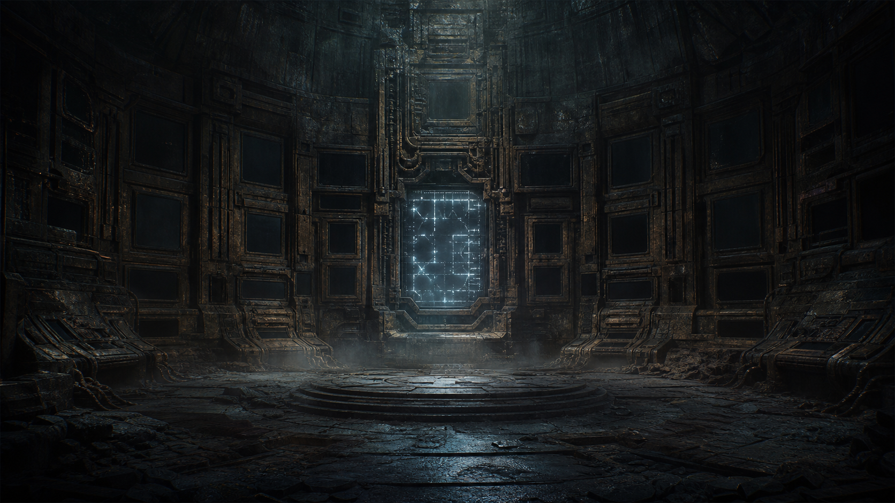

MÓDULO — La caída de la Red Única
Ambientado en Oasis (tesela recién despertada) — módulo independiente, colgado del DLC Oasis. Puede ganar riqueza opcional si se jugó "La Trampilla Vigilada", nunca la necesita. Estado: BORRADOR, pendiente de playtest.
«Cuanto más cerca de una respuesta, más se parece esto a un mito. Y no todos quieren que deje de serlo.»

Casi todos los paneles llevan generaciones apagados. Uno no ha querido callarse.
Resumen operativo — léelo antes de dirigir
Premisa: la Dra. Elin Farrow —con un fragmento de datos recuperado si se jugó La Trampilla Vigilada, o con años de investigación propia si no— cree haber localizado una segunda vía de acceso a un registro más completo de la caída de la Red Única: unas ruinas en superficie que la gente llama, sin confirmarlo del todo, "el templo". No están vigiladas por ningún gobierno ni corporación — están cuidadas, desde hace generaciones, por gente que prefiere que sigan siendo un misterio. Llegar hasta allí no es un viaje narrado en una frase: es atravesar selva real, leer ruinas que no explican su propia función, y decidir en cada paso qué se toca, qué se documenta y qué se deja exactamente como estaba.
Verbo de la aventura: atravesar y leer unas ruinas intentando llegar al registro sin destruir aquello que se ha venido a estudiar.
Duración: una sesión de 4-6 horas. Periodo: cualquiera — funciona igual de bien como investigación histórica actual que como flashback narrado. Perspectiva: mixta.
Qué saben los PJ: que existen unas falsas ruinas clásicas —columnas, una calzada de piedra artificial— cerca de un asentamiento pequeño en la selva, y que Elin Farrow cree que guardan más respuestas de las que nadie ha conseguido sacar todavía.
Verdad del Narrador: el registro que se puede recuperar aquí no es la explicación completa de la caída de la Red Única —eso el DLC lo deja deliberadamente abierto—, pero sí es real y añade algo concreto: una prueba de que, en algún momento avanzado de la Reconstrucción, alguien decidió fragmentar la red deliberadamente, no por accidente ni colapso técnico. El registro no dice qué intentaban detener al hacerlo. La comunidad que cuida las ruinas —liderada por Yeira, la más veterana— no oculta esto por malicia: lleva generaciones protegiendo el lugar como algo que merece respeto, no excavación, y teme que la respuesta completa, si existe, no vaya a gustarle a nadie.
Objetivo inmediato: conseguir acceso al registro sin imponerse sobre la comunidad que lo cuida, y decidir qué hacer con una pieza de la verdad que resulta ser más incómoda de lo esperado.
Pregunta de fondo: ¿tiene alguien derecho a convertir en dato lo que otra gente ha decidido, con cuidado, mantener como memoria y misterio?
Si nadie interviene: el registro sigue ahí, cuidado y sin tocar, y el misterio de fondo permanece exactamente igual de intacto que antes.
Desarrollo en cinco escenas
- El fragmento y la académica — Elin explica lo que cree haber encontrado; el grupo elige ruta y preparación.
- Atravesar la selva y llegar al asentamiento — el trayecto es jugable, y la forma de viajar deja huella observable.
- Ganarse el permiso — Yeira pregunta por la expedición antes de decidir si confía en el grupo.
- Descenso y registro — localizar el acceso, atravesar el deterioro, interpretar la interfaz sin destruirla.
- Qué se hace con una verdad incómoda — la decisión final, apoyada en lo que la expedición logró preservar.
Panel del Narrador — léelo antes de sentarte a la mesa
Sin cuenta atrás de horas — la presión es de confianza y de cuidado material, no de tiempo: este módulo no tiene reloj. La comunidad no va a destruir el registro ni a cerrar el acceso por el mero paso de las horas — la presión real es doble: si el grupo se gana el permiso de Yeira, y si atraviesa selva y ruinas sin dañar lo que ha venido a estudiar.
Tres rutas hacia el asentamiento, elegidas en la Escena 1 y jugadas en la Escena 2. Ninguna es la correcta — cada una tiene ventaja y coste, y los PJ pueden adaptarlas si proponen algo razonable:
- Ruta comunitaria. Más larga y segura. Sigue caminos que la propia comunidad usa y respeta sus señales y límites. Facilita la relación posterior con Yeira, pero no lleva directamente al acceso antiguo — desde el asentamiento hay que encontrarlo de todos modos.
- Ruta directa por las falsas ruinas. Más rápida. Terreno irregular, calzada rota, estructuras inestables. Permite obtener indicios arqueológicos antes incluso de llegar al asentamiento, a cambio de mayor riesgo de dañar equipo o alterar restos por el camino.
- Ruta de los marcadores de la Red. Sigue patrones tecnológicos o arquitectónicos antiguos — ayuda a localizar de antemano las conexiones subterráneas relevantes para la Escena 4. Cruza zonas que la comunidad considera sensibles, lo que puede deteriorar la primera impresión si el grupo entra sin preguntar primero.
Cómo avanza el tiempo de ficción: cada escena puede ocupar su propio día en el asentamiento — no hace falta cronometrar nada.
Las tres partes, en una frase:
- Elin Farrow → conseguir un fragmento real de la verdad, sin destruir lo que encuentra.
- Yeira → proteger el lugar y su significado, no necesariamente el secreto en sí.
- La comunidad del templo → seguir viviendo con su propia relación con el lugar, tal como la han construido durante generaciones.
No hay villano. Yeira no oculta un crimen — protege un significado. Elin no es una saqueadora — es una académica que puede aprender, si se le da la oportunidad, a pedir en vez de tomar. El conflicto es de valores, no de intenciones.
Yeira, en mesa: calmada, observadora, nunca hostil por defecto. Decide confiar por cómo se comporta el grupo, no por lo que dice que quiere. Puede negar el acceso indefinidamente sin que eso sea un fallo de partida — es una salida narrativa legítima.
Lo que ocurrió realmente
Verdad completa
Hace generaciones, durante una fase ya avanzada de la Reconstrucción, alguien con acceso a partes clave de la Red Única decidió fragmentarla deliberadamente. El registro que se conserva en este emplazamiento concreto —parte de la misma red subterránea que el búnker de La Trampilla Vigilada, si se jugó ese módulo, aunque este acceso es distinto— conserva una prueba parcial de esa decisión: no un accidente, no un colapso técnico espontáneo, sino una elección consciente. Qué intentaban detener al hacerlo es, deliberadamente, algo que ni este módulo ni el DLC deben responder.
La comunidad del asentamiento cercano ha cuidado estas ruinas durante generaciones, construyendo alrededor de ellas una relación de respeto casi reverencial —de ahí el rumor de "templo"—, sin que eso signifique que lo consideren literalmente sagrado en sentido religioso estricto. Yeira, la más veterana, teme sobre todo que convertir el lugar en un objeto de estudio académico borre lo que la comunidad ha construido alrededor de él durante todo este tiempo.
Qué saben los PJ y qué no
Pueden llegar a saber todo lo anterior si Yeira decide confiar en ellos. Lo que este módulo nunca debe resolver es qué intentaban detener quienes fragmentaron la red — es semilla de fondo, no una respuesta pendiente de entregar.
Tono
Contemplativo y respetuoso, con tensión de confianza en vez de acción. El hallazgo debe sentirse significativo y a la vez insuficiente — una pieza real, nunca el cuadro completo.
Reparto
Dra. Elin Farrow — la académica (PNJ ya publicado en el DLC)
Aspecto: ya descrita en el DLC — apasionada hasta la obsesión, incómoda hablando de cualquier otra cosa.
Ficha compartida con el resto del DLC: F20/A25/P50/V45 | PV 11/11/11 | Bld 0 | Investigación/Historia 65% | Tecnología (interfaces antiguas) 50%
- Quiere un fragmento real de la verdad, y puede aprender —si el grupo se lo muestra— que pedir funciona mejor que tomar.
- Sin PJ: intenta acceder por su cuenta, con más lentitud y más fricción con la comunidad.
Yeira — la más veterana de la comunidad del templo
Aspecto: años marcados en las manos y en la forma de caminar por un terreno que conoce mejor que su propia casa; habla poco, y cuando lo hace, todo el mundo alrededor baja un poco la voz.
PNJ interpretable (3-4 profesiones), sin ficha de combate relevante.
F25/A30/P45/V50 | PV 14/14/14 | Bld 0 | Supervivencia/Selva 55% | Social 45%
- Quiere proteger el significado del lugar, no necesariamente ocultar un secreto.
- Respeta a quien pide antes de tomar, y a quien escucha antes de explicar.
- Sin PJ: mantiene el acceso cerrado indefinidamente — desenlace legítimo, no un fallo.
La comunidad del asentamiento
Grupo funcional, sin ficha propia — reaccionan con cautela educada al principio, cálidos si el grupo se gana su confianza a través de Yeira.
Primate territorial de la selva — peligro físico opcional (Escena 2)
Ficha ya publicada en el propio DLC (bestiario de encuentros de Oasis), reutilizada tal cual: Blindaje 2 | Melé 65% (zarpazo o mordisco) | Daño 14, Pen 2 | PV 45/45/45.
- Protege un territorio concreto de la selva, no ataca por iniciativa propia salvo que se le acorrale o se invada su espacio sin aviso.
- Se puede evitar esperando, rodeando, o retrocediendo — la ruta elegida en la Escena 1 determina si hay que cruzar cerca de él.
- Se retira si sufre una herida seria; no persigue más allá de su territorio.
- Combatirlo es una elección o una consecuencia de una decisión imprudente, nunca un encuentro obligatorio.
Lugares necesarios
El asentamiento cercano a las ruinas: pequeño, autosuficiente, construido con respeto visible hacia el terreno que ocupa.
Las falsas ruinas clásicas: columnas, una calzada de piedra artificial, cuya función original nadie ha confirmado del todo (Punto 11 del DLC). Terreno irregular, calzada rota sobre alguna depresión, columnas cuya orientación puede leerse — o malinterpretarse — como señal de dirección.
La selva entre el punto de partida y el asentamiento: clima cambiante (tormentas intensas, tramos inundados), raíces que cubren restos e interfaces muertas, rastros recientes de la comunidad, territorio de fauna grande. Escenario de la Escena 2.
El registro subterráneo: acceso más discreto que el búnker de La Trampilla Vigilada — parte de la misma red, pero un punto distinto. Zona deteriorada que hay que estabilizar o rodear antes de llegar a la interfaz.
Las cinco escenas
Cada escena está pensada para dirigirse sola, sin buscar en otra parte del documento durante el juego — las fichas relevantes están repetidas dentro.
Escena 1 — El fragmento y la académica
Atmósfera:
Elin extiende sobre la mesa un mapa marcado a mano y, junto a él, un fragmento de datos que todavía no ha conseguido traducir del todo. "Hay algo más," dice, sin levantar la vista. "Y esta vez, no puedo ir yo sola."
Qué está ocurriendo: Elin explica su hallazgo (el fragmento de La Trampilla Vigilada, si se jugó, o años de investigación propia), muestra el mapa y los indicios que tiene, y admite abiertamente lo que todavía no sabe. El grupo tiene que decidir por dónde ir y con qué prepararse antes de partir.
PNJ presentes, con su intención inmediata:
- Elin Farrow — entusiasta, consciente de que necesita ayuda para hacerlo bien esta vez; puede explicar qué equipo de campo tiene disponible si se le pregunta (Aspecto y ficha: ver Reparto).
Qué saben / qué dicen: Elin sabe la ubicación aproximada y sospecha que la comunidad cercana protege algo, sin saber todavía qué ni por qué. Puede describir las tres rutas posibles en términos generales (ver Panel del Narrador) si se le pregunta, aunque no ha recorrido ninguna en persona.
Obstáculos y acontecimientos: la escena no avanza hasta que el grupo fija un plan de aproximación concreto — qué ruta, qué prioridad (velocidad, seguridad, hallazgos por el camino), y qué equipo se lleva.
Tiradas posibles (ninguna obligatoria):
- Investigación (revisar el fragmento y el mapa de Elin): éxito → confirmas que apunta a un acceso real, distinto del ya conocido, y detectas cuál de las tres rutas cruza más cerca de las falsas ruinas; fallo → información general, suficiente para empezar sin más detalle.
- Supervivencia (evaluar el terreno y el clima previsible antes de partir): éxito → sabes qué equipo de protección o abrigo merece la pena cargar; fallo → preparación genérica, sin ventaja adicional.
- Tecnología (revisar el equipo arqueológico de Elin — herramientas de documentación, soporte de datos portátil): éxito → identificas qué pieza es más frágil y merece protegerse especialmente en el trayecto; fallo → cargáis con todo sin saber qué priorizar si algo se complica.
Un fallo en cualquiera de estas tiradas produce información incompleta o una preparación deficiente — nunca impide partir.
Si los PJ no hacen nada: Elin intenta llegar sola, con peor resultado y más fricción con la comunidad desde el principio.
Cómo termina: el grupo tiene un plan de aproximación concreto — ruta elegida, prioridad clara, equipo cargado — y parte hacia el asentamiento.
Después: la ruta y la preparación elegidas aquí determinan qué obstáculos concretos aparecen en la Escena 2.
Escena 2 — Atravesar la selva y llegar al asentamiento
Atmósfera:
La selva no se cruza en línea recta. Cada paso es una lectura del terreno — dónde pisar, qué rodear, qué escuchar antes de avanzar — y las falsas ruinas, cuando aparecen entre los árboles, plantean tantas preguntas como respuestas.
Qué está ocurriendo: el grupo recorre la ruta elegida en la Escena 1 hacia el asentamiento. El Narrador selecciona dos o tres obstáculos de la siguiente lista, no todos a la vez: tormenta intensa o terreno inundado; calzada artificial rota sobre una depresión; falsas columnas cuya orientación señala una dirección contradictoria; raíces cubriendo una interfaz muerta; equipo arqueológico que hay que proteger del clima o del terreno; rastros recientes de la comunidad; el primate territorial de la selva, si la ruta cruza cerca de su zona (ver Reparto).
PNJ presentes, con su intención inmediata:
- Elin Farrow — atenta a cualquier resto arqueológico que aparezca por el camino, a veces más de lo prudente.
- Primate territorial de la selva, solo si la ruta lo cruza — no busca el enfrentamiento, protege su territorio.
Primate territorial de la selva Blindaje 2 | Melé 65% (zarpazo o mordisco) | Daño 14, Pen 2 | PV 45/45/45
Objetivo inmediato: proteger su territorio, no cazar al grupo. Conducta: no ataca por iniciativa propia salvo que se le acorrale o se invada su espacio sin aviso. Retirada: se retira en cuanto sufre una herida seria; no persigue más allá de su territorio. Alternativas al combate: esperar a que se aleje, rodearlo, retroceder, distraerlo, o simplemente evitar su zona — combatirlo es una elección o consecuencia de una decisión imprudente, nunca un encuentro obligatorio.
Qué saben / qué dicen: nada nuevo por defecto — esta escena es sobre todo terreno y decisiones físicas, no diálogo. Si se cruzan rastros recientes de la comunidad, se puede deducir que no están tan lejos.
Obstáculos y acontecimientos: cada obstáculo elegido se resuelve con una decisión y, si hace falta, una tirada — nunca con una cadena obligatoria de tres tiradas seguidas. La forma de atravesar el lugar deja una impresión observable y concreta que Yeira podrá preguntar directamente en la Escena 3: respetar señales o ignorarlas, retirar restos o dejarlos, reparar algo dañado sin apropiárselo, abrirse paso dañando lo que estorba, llevarse una pieza como muestra, u ocultar por dónde entraron.
Tiradas posibles:
- Supervivencia (elegir ruta, refugio o forma de cruzar el terreno difícil): éxito → se avanza sin complicaciones ni daño al equipo; fallo → se llega igual, con algo de equipo dañado o con más cansancio, nunca con la expedición detenida.
- Alerta (peligro inmediato — el primate, una calzada a punto de ceder): éxito → se detecta a tiempo para rodear o retroceder; fallo → el peligro se presenta de golpe, sin tiempo de elegir con calma.
- Investigación o Tecnología (interpretar restos, columnas o una interfaz muerta cubierta de raíces): éxito → una pista arqueológica útil para la Escena 4, o una lectura correcta de las columnas contradictorias; fallo → una interpretación errónea, sin consecuencia grave más allá de perder tiempo.
- Atletismo (cruces físicos — la calzada rota, un tramo inundado): éxito → se cruza sin incidente; fallo → una caída o un tropiezo, con daño menor o al equipo, nunca mortal por sí solo.
- Medicina, solo si alguien resulta herido en algún cruce físico: estabiliza sin más complicación.
- Combate no letal, solo si el primate territorial acaba acorralado o el grupo decide enfrentarlo: usa las reglas vigentes — evitarlo, esperar a que se aleje, o rodearlo son siempre opciones válidas y no penalizadas.
Si los PJ no hacen nada: avanzan por la ruta por defecto, más lentos, sin ninguna de las ventajas que una decisión activa podría haber dado.
Cómo termina: el grupo llega al asentamiento del templo, con una impresión ya formada — visible en cómo trataron la selva y las ruinas por el camino — que la comunidad habrá notado antes de que nadie diga una palabra.
Después: lo que hicieron y cómo lo hicieron aquí es, literalmente, lo que Yeira pregunta en la Escena 3 — no hace falta ningún contador: son hechos concretos que el Narrador recuerda y reintroduce en la conversación.
Escena 3 — Ganarse el permiso
Atmósfera:
Yeira escucha sin interrumpir. Cuando termina de hablar el grupo, deja pasar un silencio largo antes de decir nada — como si estuviera decidiendo algo mucho más importante que dar permiso para entrar en unas ruinas.
Qué está ocurriendo: el grupo intenta convencer a Yeira de que merece acceso al registro. Yeira pregunta directamente por lo ocurrido en la Escena 2: qué ruta usaron, qué tocaron, qué dejaron intacto, qué creen haber encontrado, y por qué quieren entrar.
PNJ presentes, con su intención inmediata:
- Yeira — evalúa con calma, decide por comportamiento y por lo que hicieron en el camino, no por argumento retórico (Aspecto y ficha: ver Reparto).
Qué saben / qué dicen: Yeira puede explicar, si decide confiar, que el lugar guarda algo real y que su miedo no es el secreto en sí, sino que se pierda el respeto con el que la comunidad lo ha tratado siempre.
Obstáculos y acontecimientos: el grupo puede explicar sus decisiones del camino, devolver algo que encontraron o se llevaron, compartir la documentación reunida por Elin, aceptar condiciones concretas, renunciar del todo, pedir que Yeira los acompañe, o proponer una visita limitada a cambio de garantías. Nada de esto sustituye lo que ya ocurrió en la Escena 2 — si dañaron algo o se llevaron una pieza sin decirlo, Yeira puede notarlo igualmente.
Tiradas posibles:
- Social o Empatía (demostrar respeto genuino, no solo cortesía táctica): ayuda a inclinar la decisión, pero no borra una conducta irrespetuosa en la Escena 2 ni sustituye lo que el grupo hizo realmente — éxito → Yeira concede acceso, acompañando personalmente al grupo; fallo → pide una condición concreta antes de decidir (por ejemplo, que Elin se comprometa a no publicar la ubicación exacta, o que se devuelva algo que se llevaron).
- Liderazgo, si Elin intenta argumentar por su cuenta con lenguaje académico: fallo casi garantizado si no se modera — Yeira responde mejor a la sinceridad simple que a la autoridad intelectual.
Si los PJ no hacen nada: Yeira no ofrece el acceso por iniciativa propia — hay que pedirlo activamente.
Cómo termina: el grupo consigue acceso, con o sin condiciones, o Yeira lo niega —desenlace legítimo que cierra el módulo aquí mismo, sin fallo de partida.
Después: las condiciones puestas aquí (si las hay) enmarcan cómo se juega la Escena 4.
Escena 4 — Descenso y registro
Atmósfera:
Bajo las falsas columnas, una escalera que nadie sin permiso encontraría nunca. Y al final, una interfaz tan antigua como el resto de la Red Única, todavía capaz de mostrar algo que nadie en Oasis ha visto en generaciones.
Qué está ocurriendo: el grupo, con Yeira o sin ella según lo acordado, desciende hasta el registro subterráneo en tres pasos compactos, sin que ninguno se resuelva con una sola tirada aislada:
1. Localizar o abrir el descenso sin dañar las falsas ruinas. Qué ven: una abertura disimulada entre las columnas, marcada de forma que solo alguien que sepa qué buscar la reconoce. Riesgo: forzarla puede desprender piedra de las propias ruinas. Método evidente: seguir las marcas si Yeira acompaña o si se identificaron en la Escena 2 (ruta de los marcadores de la Red). Alternativas: buscar por tanteo, más lento pero igual de seguro. Consecuencia del fallo: se tarda más, sin daño a las ruinas. Si Yeira acompaña, señala la abertura directamente. Si Elin actúa sin moderación, puede intentar forzarla por su cuenta, arriesgando dañar la piedra.
2. Estabilizar o atravesar una zona deteriorada. Qué ven: un tramo del descenso con la estructura comprometida por el tiempo. Riesgo: un colapso parcial, nunca mortal por sí solo. Método evidente: apuntalar con cuidado antes de cruzar. Alternativas: cruzar rápido sin apuntalar, arriesgando el colapso a cambio de tiempo. Consecuencia del fallo: separación breve del grupo, o daño a una pieza de equipo, no a las personas salvo mala suerte extrema. Si Yeira acompaña, conoce un punto de paso más seguro. Si Elin va sin moderación, puede intentar cruzar sola para llegar antes a la interfaz.
3. Interpretar el registro preservando el soporte original. Qué ven: la única interfaz todavía activa entre decenas de paneles muertos, con un patrón de luz que no coincide con nada de la tecnología actual de Oasis. Riesgo: forzar una lectura rápida puede dañar el soporte y perder parte del registro. Método evidente: una interpretación cuidadosa, más lenta. Alternativas: copiar los datos brutos para analizarlos después, a costa de no estabilizar la interfaz misma — hay que elegir entre una cosa y la otra si no hay tiempo para ambas. Consecuencia del fallo: una versión parcial del registro, suficiente para confirmar la intencionalidad, sin más detalle. Si Yeira acompaña, su reacción ante lo que se descubre puede revelar cuánto sabía ya ella misma, sin decirlo en voz alta. Si Elin actúa sin moderación, prioriza cantidad de datos sobre preservación, arriesgando el soporte original.
PNJ presentes, con su intención inmediata:
- Yeira, si acompaña — observa en silencio, dispuesta a intervenir solo si algo se maneja con menos cuidado del prometido.
- Elin Farrow — absorta, casi olvidando cualquier otra consideración salvo la propia investigación.
Qué saben / qué dicen: el registro confirma que la fragmentación fue deliberada, no accidental — sin decir qué intentaban detener quienes la provocaron.
Tiradas posibles: solo pide una tirada cuando exista incertidumbre real y una consecuencia relevante. No es obligatorio tirar en los tres pasos — la preparación, la ruta elegida y la ayuda de Yeira pueden resolver alguno sin tirar.
- Paso 1 — localizar o abrir el descenso: Investigación o Alerta, si realmente hace falta buscarlo. Sin tirada si Yeira acompaña o si los PJ identificaron correctamente los marcadores en la Escena 2. Forzarlo puede requerir Mecánica, con riesgo de dañar las ruinas. Éxito → se abre sin coste; fallo → se tarda más o se arriesga daño a la piedra, según el método elegido.
- Paso 2 — estabilizar o atravesar la zona deteriorada: Mecánica o Supervivencia para asegurar el paso; Atletismo para cruzar sin estabilizarlo, aceptando el riesgo. Una buena preparación en la Escena 1 puede evitar la tirada. Éxito → se cruza sin coste; fallo → separación breve o daño a una pieza de equipo, nunca a las personas salvo mala suerte extrema.
- Paso 3 — interpretar el registro: Tecnología o Investigación. Elegir entre copiar los datos brutos o estabilizar la interfaz sigue siendo una decisión de la mesa, nunca dos tiradas obligatorias. Éxito → registro completo de esta prueba; fallo → versión parcial, suficiente para confirmar la intencionalidad.
- Empatía, si Yeira acompaña (opcional, sin combate): notar su reacción ante lo que se descubre.
Ningún coste de fallo en ningún paso bloquea el avance a la siguiente parte de la secuencia.
Si los PJ no hacen nada: sin acceso, el grupo se va sin la pieza concreta de verdad, aunque conserva la relación (o no) construida con la comunidad.
Cómo termina: el grupo confirma siempre que la fragmentación fue deliberada — lo que varía según cómo se jugó la secuencia es la calidad y el contexto del registro recuperado, nunca el hecho central. Ninguna tirada fallida aislada bloquea el hallazgo.
Después: qué hicieron para llegar hasta aquí, qué dañaron o preservaron en el camino, y cuánto registro lograron recuperar condiciona toda la Escena 5.
Escena 5 — Qué se hace con una verdad incómoda
Atmósfera:
De vuelta en el asentamiento, con algo que ya no se puede dejar de saber. La pregunta ya no es qué han encontrado — es qué van a hacer con ello, y a quién le corresponde decidirlo.
Qué está ocurriendo: con el hallazgo confirmado, toca decidir si se publica, se protege, o se comparte solo parcialmente — apoyándose en lo que realmente ocurrió durante la expedición, no en una elección abstracta desligada de lo jugado.
PNJ presentes: Elin Farrow, Yeira, la comunidad como interesada indirecta.
Qué saben / qué dicen: publicar el hallazgo completo podría dar a Elin reconocimiento académico real, a costa de exponer el lugar a más atención de la que la comunidad quiere; protegerlo respeta el deseo de Yeira, a costa de que el conocimiento se pierda de nuevo. Cómo accedieron, qué dañaron o preservaron por el camino, cuánto registro lograron recuperar en la Escena 4, y qué le prometieron a Yeira en la Escena 3 dan forma a qué opciones son creíbles ahora — si el grupo dañó las ruinas o se llevó algo sin permiso, a Elin le cuesta más presentarse como alguien que "pidió en vez de tomar"; si trataron el lugar con cuidado real, Yeira tiene motivos concretos para confiar en un acceso duradero.
Tiradas posibles: Social o Liderazgo para mediar entre Elin y Yeira; ninguna sustituye la decisión de la mesa ni cambia lo que realmente ocurrió en las escenas anteriores.
Si los PJ no hacen nada: Elin decide por su cuenta, probablemente inclinándose hacia la publicación académica si nadie la modera.
Cómo termina: queda decidido qué pasa con el hallazgo y qué relación queda entre Elin, Yeira y la comunidad — coherente con cómo se comportó el grupo desde la Escena 1, no como una elección aislada de última hora.
Después: ver Desenlaces combinables para las consecuencias a medio plazo.
Pistas e información
| Fuente | Revela | Vía alternativa |
|---|---|---|
| Fragmento y mapa de Elin (Escena 1) | Ubicación aproximada del acceso, y qué ruta cruza más cerca de las falsas ruinas | — |
| Indicios arqueológicos por el camino (Escena 2) | Pistas útiles para la Escena 4, según la ruta elegida | — |
| Ganarse la confianza de Yeira (Escena 3) | Por qué la comunidad protege el lugar | Observar su reacción durante la Escena 4 |
| El registro subterráneo (Escena 4) | La fragmentación fue deliberada, no accidental | — |
Recompensas y gastos
Recompensa económica: entre 100 y 250 créditos locales por PJ, pagados por Elin con fondos de su propia investigación — modesta, académica, no corporativa.
Beneficios alternativos: relación de confianza con Yeira y la comunidad del templo; reconocimiento académico compartido si se publica el hallazgo; acceso futuro a la red subterránea si Yeira decide confiar de forma duradera.
Desenlaces combinables
Publicación respetuosa. Elin publica el hallazgo sin revelar la ubicación exacta ni el papel de la comunidad — reconocimiento académico real, protección parcial mantenida.
Protección total. El grupo respeta el deseo de Yeira por completo — el conocimiento queda entre ellos, sin publicarse, y la comunidad sigue exactamente igual que antes.
Publicación sin cuidado. Si Elin actúa sola o sin escuchar a nadie, publica todo, incluida la ubicación — daño real a la relación con la comunidad, gancho de tensión para el futuro.
Acceso concedido de forma duradera — combinable con cualquiera de los anteriores: Yeira decide que el grupo (no cualquiera) puede volver si hace falta, estableciendo una relación de confianza a largo plazo.
Continuidad opcional
- Versión independiente: no exige haber jugado La Trampilla Vigilada — Elin llega al mismo punto por investigación propia si no se jugó.
- Si se jugó La Trampilla Vigilada: el fragmento de datos de aquel módulo es literalmente lo que trae Elin a la Escena 1, dando peso concreto a por qué confía en esta pista.
- Si se juega en la campaña de origen: Totovía, el anfitrión de la mansión del bosque, puede aparecer como conocido de Yeira o de la comunidad, sin necesidad de ficha nueva.
Ejemplo de puerta abierta: si el grupo se gana la confianza duradera de Yeira, ella puede convertirse en contacto de la selva para cualquier módulo futuro de Oasis que necesite ese tipo de guía.
Límites de este módulo
- No resolver qué intentaban detener quienes fragmentaron la Red Única — queda como misterio de fondo, coherente con el propio DLC.
- Yeira no es una guardiana hostil ni un obstáculo de manual — su negativa, si ocurre, es una decisión legítima con sus propias razones.
- No convertir esto en una escena de expolio arqueológico sin consecuencias — el respeto hacia la comunidad debe importar mecánica y narrativamente.
- Sin subsistema nuevo: nada de puntos de Suministro, contador de Confianza, reloj de Expedición, encuentros aleatorios obligatorios ni cadena de tiradas fija — la selva y las ruinas se cruzan con decisiones concretas y las habilidades ya vigentes.
- El peligro físico (Escena 2) nunca es combate artificial para "dar acción" — surge del terreno, el clima, el deterioro de las ruinas o una decisión imprudente; si aparece el primate territorial, combatirlo es una elección o consecuencia, nunca un encuentro obligatorio.
- Ningún fallo de tirada aislado bloquea el hallazgo central en la Escena 4 — solo varía la calidad y el contexto de lo recuperado.
- No revelar ni insinuar el despertar en este módulo.
Resumen para dirigir
Expedición arqueológica sin reloj de horas — la presión es de confianza y de cuidado material, no de tiempo. Cinco escenas autosuficientes: el encargo y la ruta → atravesar la selva → ganarse el permiso → descenso y registro → la decisión final, cada una con atmósfera, tiradas con éxito/fallo concretos y transición a la siguiente. Tres rutas distintas, ninguna correcta; la forma de atravesar selva y ruinas deja huella observable que condiciona todo lo que viene después. El hallazgo es real pero incompleto — el misterio de fondo de la Red Única sigue, deliberadamente, sin resolverse del todo.
Oasis — tesela recién despertada. Desarrolla la semilla "La caída de la Red Única" (Punto 16 del DLC). Gana riqueza opcional si se jugó "La Trampilla Vigilada", nunca la necesita.